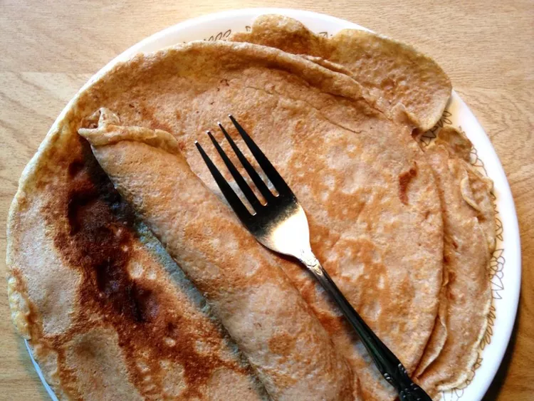

Lasagna

Description
Because of the fact that these crêpes are so healthy compared to the other snacks
that are readily available in the supermarket, sometimes I like to make some for the kids and I.
It took me a long time to find the perfect balance between sugary-sweet and healthy, and with this recipe, I think I've
hit the nail on the head.
Ingredients
- 1 Cup of white whole wheat flower
- 2 Eggs
- Half a cup of low-fat milk
- Half a cup of water
- A quarter teaspoon salt
- 2 tablespoons melted butter
- Half a cup of non-fat plain Greek yoghurt
- A quarter of a cup of maple syrup
- Half a cup of blueberries
Steps
- Whisk together flour and eggs in a large mixing bowl. Gradually add milk and water, stirring to combine. Mix in butter and salt and beat until smooth
- Heat a lightly oiled griddle or frying pan over medium-high heat. Pour or scoop 1/4 cup batter onto griddle. Tilt pan with a circular motion so batter coats the surface evenly.
- Cook crepe until bottom is light brown, about 2 minutes. Loosen with a spatula, turn and cook other side. Serve hot with yogurt, maple syrup, and blueberries.